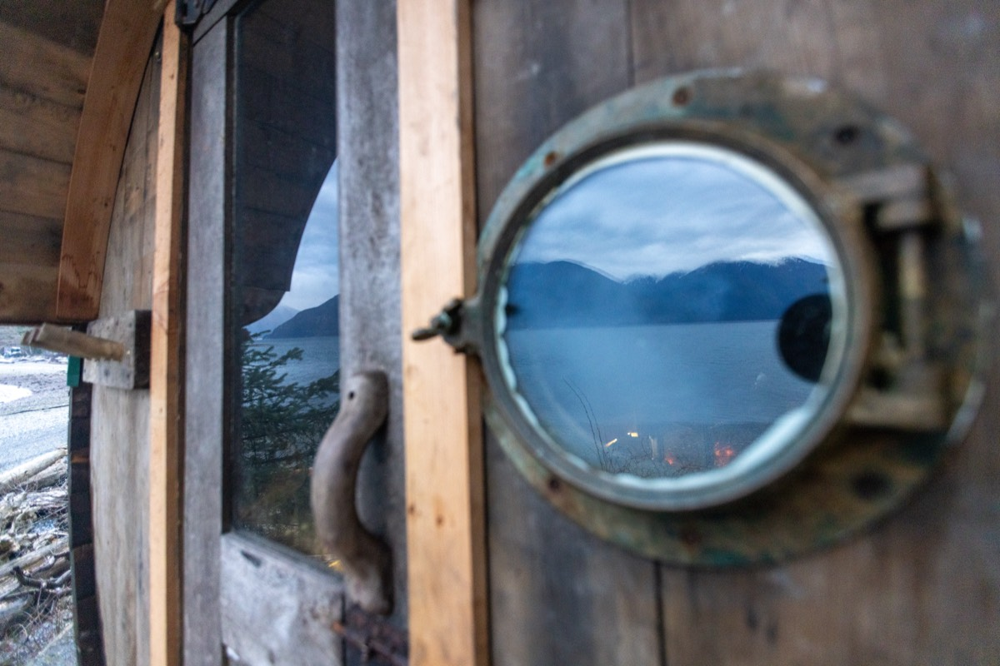

Canadians don't need convincing that sauna and winter belong together. Here are a few practical tips to keep a cold-weather session comfortable and safe.
Get the temperature right
On a cold day, a wood-fired sauna may take longer to come up to temperature, so give it extra time. A typical Finnish-style sauna runs somewhere between 70 and 90°C. In winter, stay a little longer if you need to, but always listen to your body.
What to wear between rounds
- A robe or large towel. Wet skin and a cold breeze lose heat fast.
- Waterproof footwear. Slip-on boots or rubber sandals with some grip. Wet snow and decking are slippery.
- A hat. You lose a lot of warmth through your head when wet. A wool hat, like a bucket or belltop sauna hat, works in both the heat and the cold.
- Dry clothes for afterwards. Cotton is fine here, since you'll be warm and dry.

Cooling down in the cold
- Step outside and breathe. In sub-zero weather, a minute or two is all you need.
- If you roll in the snow or take a cold plunge, keep it brief and never go alone if you're unsure.
- Return to the heat when you start to feel cold, not when you start to shiver.
Hydration matters more than you think
Cold weather hides how much you're sweating. Drink water before, between and after rounds. Warm herbal tea is a nice option in the break room or at your outdoor sauna. Skip alcohol until you're finished.
Safety in the snow and ice
- Clear the path to the sauna and keep it free of ice.
- Keep a headlamp handy if it gets dark early.
- Let someone know where you're going, especially at remote saunas.
- Leave the sauna if you feel dizzy, nauseous or very tired.
Renting a winter sauna in the Sea to Sky
If you'd like a private wood-fired sauna for a snowy weekend, see winter sauna in Squamish from Mamquam Sauna, or the guides at Sauna Squamish and Sauna Whistler.
Questions
Is it safe to go from a hot sauna into the snow?
Many people enjoy it, but keep it short and sensible. Cool down for a minute or two, then warm up again. Skip it if you feel unwell, have heart or blood pressure concerns, or have been drinking.
What should I wear to a winter sauna?
Warm, easy layers over your swimsuit, waterproof sandals or boots, a robe or towel and a hat. Pack dry clothes for after.
Do I need a sauna hat in winter?
A wool sauna hat is useful all year. In winter it also helps keep your head warm when you step outside between rounds.
Shop wool sauna hats, shipped across Canada from Squamish.
Bucket, Belltop and 100% Merino. Free shipping on orders over $75.
More from the journal: 12 Sauna Gift Ideas for the Sauna Lover in Your Life · Sauna Etiquette: 12 Unwritten Rules · What's the Best Material for a Sauna Hat? · How to Wear a Sauna Hat (and Look After It) · Bucket, Belltop or Merino? Choosing Your Sauna Hat Style